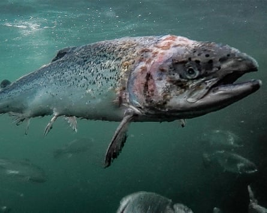
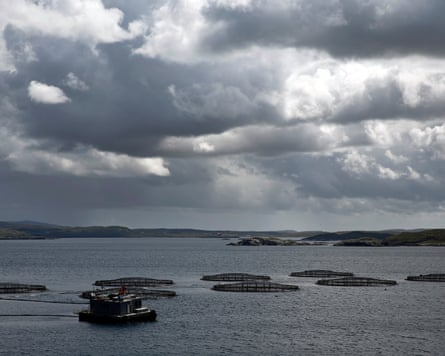
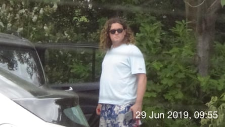

Wildlife activists who exposed horrific conditions at Scottish salmon farms were subjected to “Big Brother” surveillance by spies for hire working for an elite British army veteran.
One of the activists believes he was with his young daughter on at least one of the occasions when he was followed and photographed by the former paratrooper Damian Ozenbrook’s operatives.
Corin Smith, a former fly-fishing guide from the Highlands who has spent years confronting the multinationals that own the farms, said: “What do I say to my little girl when she asks me what had I done wrong to be followed? What if she feels like she has to look over her shoulder?”
Knowing you have been watched was “an earworm of an idea that gets in your brain and drives paranoia, guilt, anger and stress”, Smith said. “This could happen to anyone. It might be happening to you and your family right now. Military types following you around with no purpose other than spying on you to try to find something in your private life that might be useful to whomever pays them.”
While a public inquiry is scrutinising spying by police after they infiltrated environmental groups and other campaigns, a Guardian investigation shines a rare light on the private spies-for-hire industry. That industry, which one lawyer calls “a wild west”, ranges from bumbling gumshoes to alumni of the special forces and MI6.
The surveillance of Smith and another wildlife activist, Don Staniford, began after they paddled out to some of the floating cages where millions of salmon are farmed every year, yielding Scotland’s biggest food export, and filmed what was happening inside.
The footage, posted online and broadcast by the BBC in 2018, showed fish crawling with sea lice. Some had chunks of their flesh torn away; others’ spines were twisted .
Salmon at the Scottish Salmon Company’s Loch Roag farm in 2018.Photograph: Corin Smith
Three years later, in 2021, Smith discovered an “intelligence report” that the Scottish Salmon Company had commissioned. It was contained in a 653-page response from the company to Smith’s request under data protection law for information it held on him.
At the time, the fish-farming corporation was owned by anonymous investors, led by a financier who had made his fortune in Russia.
The report was dated November 2018, just after the activists had started publishing their footage. It gave Smith’s address and mobile phone number, listed his business interests and analysed his social media. It proposed surveillance and using a “legend” – a false identity – to seek “indicators of financial difficulties”.
Smith was not told that Ozenbrook’s private intelligence firm Blue Square Global produced the report, nor whether the proposed surveillance had gone ahead. But now the Guardian has obtained images of Smith and Staniford gathered by Ozenbrook’s operatives. One picture, taken in 2019, shows Smith holding what he said was his child’s jacket.
The intelligence report also recommended spying on Staniford, a campaigner from Wirral. Since Smith showed him the report four years ago, Staniford said, he had felt vulnerable. “You feel threatened, you can’t sleep. It’s like a sinister force watching you.” He, too, was followed by Blue Square Global, the images confirm.
Ozenbrook’s lawyers said he and his firm “only engage in legitimate, lawful and proportionate investigations” and had not “conducted any unlawful or improper surveillance activities including in relation to Mr Smith or Mr Staniford”.
They added: “Mr Ozenbrook takes personal and professional pride” in the results achieved for clients.
‘Very dangerous and very hostile’
Ozenbrook uses fellow former military personnel and ex-police officers to conduct operations for paying clients.
Now 46, he was among the first British troops into Afghanistan, he told his local paper , the Lancashire Telegraph, after he left the Parachute regiment and founded Blue Square Global in 2007. “It was very dangerous and very hostile but, operationally, I got a lot of experience out there, which I want to bring into the business,” he said.
Soon, Ozenbrook struck a commercial relationship with the armed forces. Blue Square Global has trained UK and allied service personnel in “specialist covert surveillance”, its lawyers said.
At first, Ozenbrook’s work for private clients was parochial. They wanted to know if staff on sick leave were genuinely ill or whether a manager in the Ribble valley had his fingers in the till. But before long he found wealthier customers.
In 2012, court records show, Ozenbrook’s firm “watched” Scot Young, a property developer, during high court divorce litigation brought by Young’s ex-wife Michelle. Young, who fell to his death from a Marylebone flat in 2014, was deep in “Londongrad”, the world of rich Russians in the UK.
Another client also had roots in Russia – the owner of the salmon farming corporation that hired Blue Square Global to look into the wildlife activists.
Born in Ukraine and raised in the US, Yuriy Lopatynskyy made his fortune in the post-Soviet frenzy of 1990s Moscow. He ran a brokerage that extracted millions in what a judge in the tax haven of Jersey called “illicit” profits from western investors in a 1997 titanium deal.
He went on to form an investment venture with Arne Treholt , a Norwegian politician who had served a prison sentence for passing Nato military secrets to the KGB. Lopatynskyy has said he has never had a relationship with Russian intelligence.
Fish farms operated by The Scottish Salmon Company in Loch Roag near Stornoway.Photograph: Bloomberg/Getty Images
Not long after his venture with Treholt, in 2009 Lopatynskyy bought into Scottish salmon farming through opaque offshore companies with fellow investors he declined to name in public. A decade later, they would make handsome profits with a $400m sale of their fish farms – but only after fighting back against the activists.
Lopatynskyy did not respond to a request for comment. Bakkafrost, the salmon farms’ new owner, said the intelligence report was prepared “under the direction of previous senior management”.
‘It’s a wild west’
Covert surveillance by state agencies is subject to legislation that includes independent oversight. But once highly trained operatives leave the police, military or intelligence services, the private firms that deploy them are barely regulated.
Guy Vassall-Adams KC, a barrister who has worked for the targets of surveillance, including anti-asbestos activists infiltrated by private spies, believes these private firms “engage in highly intrusive investigations which often involve serious infringements of privacy.” He added. “It’s a wild west.”
One firm, run by a former special forces pilot, was found to have infiltrated Greenpeace , Friends of the Earth and other environmental groups for corporate clients in the 2000s. Another, reportedly founded by an ex-MI6 officer, was hired in 2019 by BP to spy on climate campaigners .
As authoritarians reach beyond their borders to hunt enemies, steal technology and destabilise democracies, Dan Jarvis, another ex-Para who is now Keir Starmer’s security minister, in January warned operatives to be “vigilant” because “foreign states are increasingly looking to the industry as a tool to carry out their dirty work”.
The Association of British Investigators, an industry body, says firms should ensure that “legitimate interest … aligns with the reasonable expectations of the individual and outweighs any potential harm or intrusion into their privacy”.
The application of privacy, data protection and harassment laws to surveillance firms is largely untested, experts say, in part because the industry operates in the shadows.
Smith juggles campaigning with running a bed and breakfast in the Highlands. Until he stumbled on the salmon-farming business, he was no campaigner. He had spent years in the tech industry before becoming a fishing guide, first in Africa then in Scotland. When a friend alerted him to ailing wild salmon in rivers near the offshore farms, he started to investigate. His graphic footage helped launch a campaign to improve conditions – or even ban the farms – that continues today .
He said the spies “crossed the line” if they were seeking “kompromat” on him. “I have never had anything to hide,” he said. But he has been left thinking: “Have they inflicted this intrusion on friends and members of my family? What do I do about that? How do I protect them from this? Did they come to my house?”
In 2021, while changing a tyre, Smith found a tracker on his car. Using trackers is lawful only if it adheres to data protection and other legislation. The Guardian has been unable to establish where the tracker came from.
Ozenbrook’s lawyers said he and his firm “have no knowledge of, or involvement with, any tracking device allegedly placed on Mr Smith’s car”.
After Smith discovered the tracker and the intelligence report in 2021, the Greenpeace oceans campaigner Willie Mackenzie told The Ferret , a Scottish investigative publication: “This Big Brother level of corporate snooping on an environmental campaigner is frankly disturbing.”
A surveillance image of Don Staniford from June 2019.Photograph: supplied
Staniford, the second target, travels to Scotland from his home in Merseyside. As well as posting footage, he has used his blog to raise questions about the farms’ owners. Lawyers for Lopatynskyy sent him a threatening letter demanding he delete his commentary, which Staniford has declined to do.
Fish-farming companies have since won court orders restricting his ability to film at their facilities.
Spying on the activists appears to have been only one of many Blue Square Global operations. By 2021, two years after that job, Ozenbrook’s firm was making millions, its accounts show.
That year, he moved his headquarters to Mayfair, the exclusive London district that is home to top-end private intelligence firms. From this “nerve centre”, the company’s website says, its network of operatives extends “around the globe”, working for “private individuals, leading law firms, family offices, litigation funders, multinational businesses and financial institutions”.